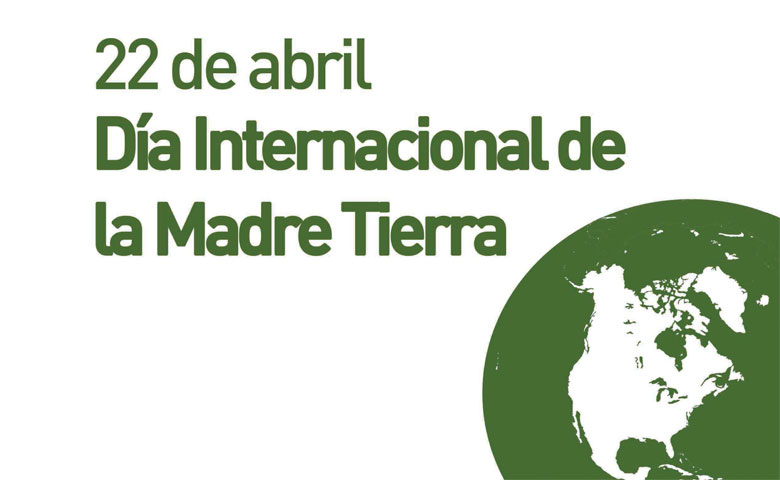

Día Internacional de la madre Tierra (22 de Abril)
- 


Realizado por:
José Armando Pedraza Cabrera
4°- "E"
Especialidad:
Programación
Submódulo:
Desarrolla Aplicaciones Web
Docente:
Lic. José Antonio Gómez Hernández
4°- "E"
Programación
Desarrolla Aplicaciones Web
Lic. José Antonio Gómez Hernández
Celebramos el Día Internacional de la Madre Tierra para recordar que el planeta y sus ecosistemas nos dan la vida y sustento. Con este día, asumimos, además, la responsabilidad colectiva, como nos recordaba la Decalración de Río de 1992, de fomentar esta armonía con la naturaleza y la Madre Tierra.
Este día nos brinda también la oportunidad de concienciar a todos los habitantes del planeta acerca de los problemas que afectan a la Tierra y a las diferentes formas de vida que en él se dearrollan.